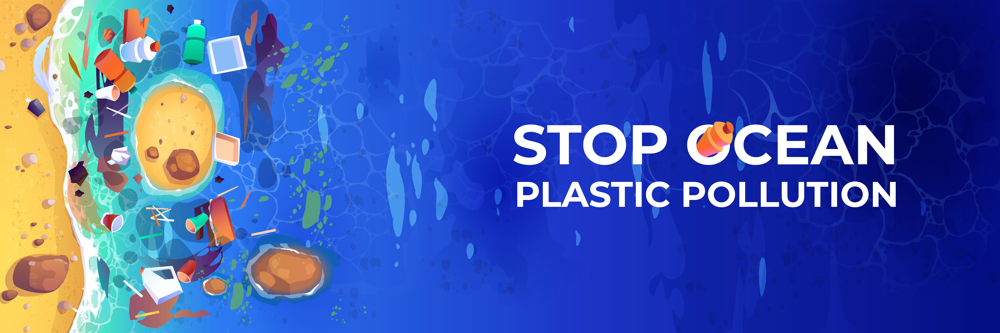
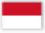
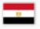
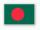

- 


Los plásticos ya han conquistado los lugares más remotos e inaccesibles del planeta. Mientras, un tratado internacional para regular la contaminación cobra impulso.
Las consecuencias de la contaminación pueden ser irreversibles. Algunas de ellas representan los problemas más graves a los que se enfrenta el medio ambiente...
Se denomina contaminación ambiental a la presencia de componentes nocivos (ya sean químicos, físicos o biológicos) en el medio ambiente (entorno natural y artificial)...
Es muy importante tomar conciencia del daño que el ser humano le genera día a día al planeta. Las actividades diarias de la personas, las industrias, los residuos no orgánicos, el exceso de plástico, etc. Podríamos llenar ésta página con todas las causas que están provocando este daño, el cual en algunos casos ya es de forma irreversible. Es urgente tomar medidas correctivas y que con el apoyo de todos nosotros cuidemos nuestro hogar. ¡No tenemos otro para vivir!.
| PAIS | PORCENTAJE | EMBLEMA |
|---|---|---|
| China | 29,34 | |
| Estados Unidos | 13,77 |  |
| Unión Europea | 9,57 |  |
| India | 6,62 | |
| Rusia | 4,76 | |
| Japón | 3,56 | |
| Alemania | 2,15 |  |
| Coreo del Sur | 1,82 | |
| Irán | 1,81 |  |
| Arabia Saudita | 1,72 |
| PAIS | TONELADAS | EMBLEMA |
|---|---|---|
| China | 8,8 | |
| Indonesia | 3,2 |  |
| Filipinas | 1,9 | |
| Vietnam | 1,8 | |
| Sri Lanka | 1,6 | |
| Egipto | 1,0 |  |
| Tailandia | 1,0 | |
| Malasia | 0,9 | |
| Nigeria | 0,9 | |
| Bangladés | 0,8 |  |